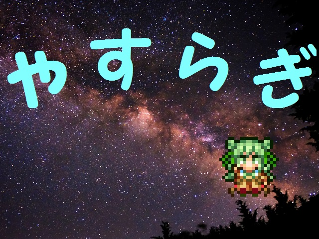

保存資料：2019-03-30の公開ページを再生しています。原HTMLと画像の載荷は保存済みです。
 |
|
| 作者：鹿河豚 | |
| ツクール：2000 | |
| ジャンル：魔王把握 | |
| 配信/投稿：すごく/うれしい | |
| 作者コメント： 安らぎ3アレンジだけでリカバーⅠが魔王把握するksgです 【あらすじ】 世界が安らぎに包まれてしまった！ 天は割れ、 地は裂けたりはしないけどこのままじゃいろいろ大変そうなのでリ カバーⅠは魔王把握に挑む。 世界は何故安らぎに包まれたのか。そして戦いの末、 りかちーの見出した答えとは・・・？ 今回tkったアレンジ他の作品にも使っていただけると嬉しいなー と思ったり。 前回は完成できなかったけど完成してからエントリーしてるので今 回は提出できる・・・はず |
|
| 管理人コメント： 安らぎ3を聞いてると旅の思い出を振り返りたくなります |
|
| ダウンロード(721KB) / 感想掲示板 | |
| 前の作品 / 次の作品 / TOPへ戻る | |